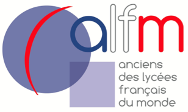

Hello, my name is John Smith Tchakounte Tchouanga, I am 18 years old. I am in ESSEC Business School
I am at Essec in the BBA in my first year because I like to have concrete subjects that I know will be useful for my future.
I am passionate about basketball You may ask, but why is he such a basketball fan? Well, basketball is a sport where you alternate between running, sprinting, jumping, pushing, throwing... You are constantly in action and you rarely stop running. The heart and muscles are constantly being used, so you will quickly gain a good physical condition while playing basketball. You have to listen to your teammates and communicate. You share the same jersey so you all have to get along.
I am studying at ESSEC Even though I've only been at ESSEC for almost a year, I immediately loved it as a student. Indeed, the courses have really interested me and I was able to work with my classmates on a lot of concrete projects. These projects are always innovative and often on topical subjects which gives me the impression that my work is really useful. Also, this work allowed me to integrate directly with the other students. At ESSEC, there are courses of course, but also the associations, which give me the impression of travelling every day and allow me to meet people from all over the world and from all cultures. This is one of my favourite aspects: being able to meet people from all over the world and discover their cultures.
Created in 2010, the Union-ALFM aims to unite former students of French high schools around the world by strengthening, in France and abroad, the ties of friendship and solidarity between them. Our mission : To encourage and support the development of alumni associations at local level. To network our members and facilitate the development of professional opportunities. To promote the actions and talents of our members. To promote the French educational model and the values associated with it: tolerance, humanism, fraternity, secularism, equality of opportunity, intellectual curiosity, promotion of critical thinking and mutual aid.
